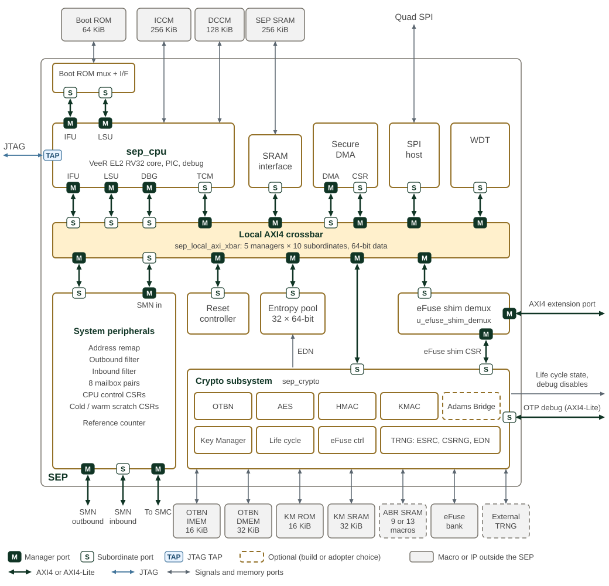

Hardware Overview
SEP top-level microarchitecture shows the top level SEP architecture.

Every AXI4 link carries a manager port (M) at the initiating end and a subordinate port (S) at the other. The local crossbar has five managers: the CPU IFU, LSU and debug ports, the DMA, and inbound SMN traffic after the system peripherals' inbound filter. Its ten subordinates are the CPU TCM port, the SRAM interface, the DMA registers, the SPI host, the watchdog, the system peripherals, the reset controller, the entropy pool, the crypto subsystem and the eFuse shim demux. SEP AXI4 connectivity gives the permitted paths. The IFU and LSU reach the boot ROM through a dedicated AXI mux rather than the crossbar, and the IFU crossbar port reaches only the SRAM. The eFuse shim demux sends accesses in the eFuse shim CSR window to the crypto subsystem and the rest of the external aperture to the AXI4 extension port.
The grey boxes are the memory macros and IP that the integration layer
instantiates outside the SEP. The Adams Bridge and its SRAMs are present only
when the build defines SEP_ABR_EN; the Adams Bridge uses nine SRAMs, plus
four masked copies when ABR_MASKING_EN is set. The external TRNG is an
adopter choice. Interrupt lines to the CPU PIC are not drawn; see
Interrupts.
SEP is hierarchically organized as follows:
-
SEP interconnect fabric
-
AXI4 top level for CPU subsystem, its base platform components, System peripherals, Cryptographic/Security peripherals and IO peripherals subsystems
-
-
External IO ports
-
System Interface to SMN NoC
-
Outbound AXI4 system bus master
-
Inbound AXI4 system bus slave
-
-
Low speed IO peripherals AXI4 extension port with peripheral interrupt
-
SPI controller interface (standard, dual or quad, on four data lanes)
-
Remote peripherals shared with SMC: UART, GPIO
-
-
JTAG for debug and test
-
-
External Macro Interfaces
-
Memories: BL0 ROM, DCCM, ICCM, Scratch SRAM, KM SRAM, KM ROM, OTBN IMEM, OTBN DMEM
-
OTP eFuse
-
Entropy source
-
-
CPU subsystem
-
JTAG interface to CPU debugger and system debug facilities
-
Tightly coupled instruction SRAMs and ROM
-
-
Scratch Register Bank x 2
-
DMA Engine
-
Watchdog Timer (WDT)
-
Alarm aggregation processor (AGP) with Reliability, Availability, and Serviceability (RAS) port - deferred to the next generation
-
Cryptographic subsystem
-
Cryptographic accelerators: Public Key Engine, AES, HMAC-SHA2, KMAC-SHA3, Adams Bridge (ABR) for post-quantum cryptography
-
Security components: Life Cycle Controller, Key Manager, OTP Fuse Controller
-
Entropy source, DRBG, Entropy Distribution
-
Key Manager (KM)
-
Key and Policy Vault (KPV)
-
Crypto engine key sideload interfaces
-
-
The cryptographic, peripheral IO and systems IO subsystems reside in their own respective hierarchies. These subsystems are connected with the main SEP AXI4 crossconnect fabric. Individual peripherals in the subsystems have AXI4-lite interfaces.
Technology and vendor specific macro blocks such as SRAM, ROM etc. are instantiated outside of SEP and have dedicated SEP interfaces. The goal is to cleanly separate the generic SEP IP from technology specific components in order to make integration and migration easier.
1. Clock Distribution
SEP clock tree and clock domains overlays the SEP clock domains on the top-level diagram.
The SEP clock clk_i, which the SMU drives from clk_smu_i, clocks
everything in the green zone. Three regions run on their own clocks, each
tinted in the colour of the clock input that feeds it:
-
clk_wdt_i, the watchdog counter clock, drives the counter in the watchdog. The watchdog registers stay onclk_iand cross to the counter inside the watchdog. -
clk_ref_i, the free-running reference clock, drives the reference counter in the system peripherals, which crosses its count intoclk_i. -
entropy_rosc_sample_clk_idrives the noise sampler of the entropy source in the TRNG. The sampled noise is resynchronised intoclk_i.
The CPU debug TAP runs on jtag_tck_i and hands DMI accesses to the core
through a synchroniser into clk_i. The quad SPI serial clock is divided from
clk_i inside the SPI host. The ICCM, DCCM and Adams Bridge SRAM requests
carry their macro clock, derived from clk_i, alongside the request.